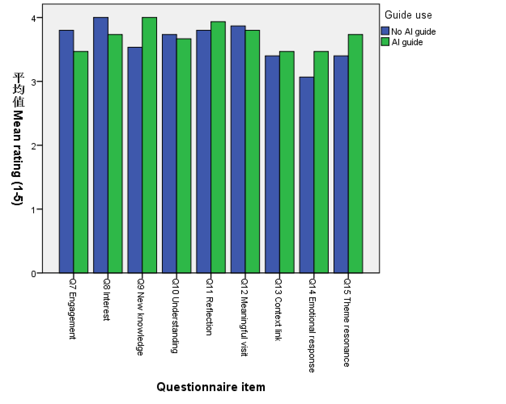

ADS401 HCI evaluation · Group H
Usability Evaluation of the XJTLU Museum AI System
A broader usability evaluation, including a 30-student post-visit experience experiment.
XJTLU students, 17 undergraduate and 13 postgraduate.
AI-guide and no-AI comparison groups.
Q7–Q15 ratings from 1 to 5.
No Holm-adjusted p-value was below .05.
01 Project context
Overall topic: How usable is the museum AI guide, and how does AI-supported guidance shape the museum visit?
How do post-visit experience ratings differ between students who used the AI guide and those who did not?
02 Design
03 Measurement
04 Analysis
Two-sided independent-samples Mann–Whitney U tests for each ordinal item. Holm correction covers all nine comparisons. Rank-biserial correlation reports effect direction and magnitude.
No missing ratings, duplicate IDs, or out-of-range values were found.
05 Results chart

Blue: no AI guide. Green: AI guide. Bar height is descriptive; inference uses ranks.
06 Key result
Q9 had the largest descriptive difference: +0.47, raw p = .230, Holm p = 1.000, rrb = +.249.
07 Full result profile
| Item | Δ AI−No AI | Raw p | Holm p |
|---|---|---|---|
| Q7 Engagement | −0.33 | .278 | 1.000 |
| Q8 Interest | −0.27 | .328 | 1.000 |
| Q9 New knowledge | +0.47 | .230 | 1.000 |
| Q10 Understanding | −0.07 | .804 | 1.000 |
| Q11 Reflection | +0.13 | .757 | 1.000 |
| Q12 Meaning | −0.07 | .622 | 1.000 |
| Q13 Context | +0.07 | .875 | 1.000 |
| Q14 Emotion | +0.40 | .318 | 1.000 |
| Q15 Resonance | +0.33 | .427 | 1.000 |
08 Interpretation
The current data do not provide sufficient evidence that AI-guide use changes any of the nine post-visit ratings.
- All outcomes are self-report.
- The 30-student sample is small.
- No verified primary endpoint was available.
- Allocation records prevent causal interpretation.
09 Next study
- Verify the allocation process.
- Pre-specify one primary outcome.
- Recruit a larger sample.
- Keep the exhibition context comparable.
10 Conclusion
No significant difference in this sample. Do not claim equivalence or a causal AI effect. The main methodological lesson is that allocation records, a pre-specified endpoint, and correction for multiple tests must be planned before data collection.